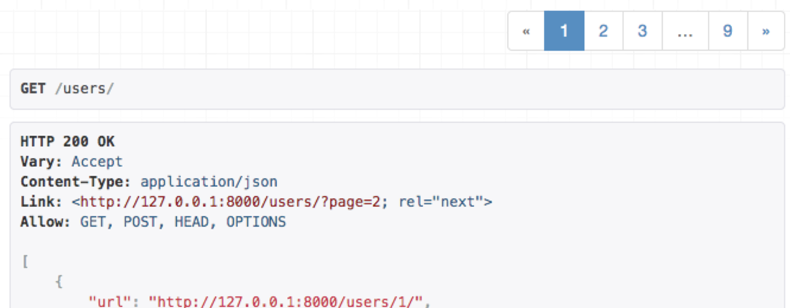

Django REST Framework - Pagination
"Django provides a few classes that help you manage paginated data – that is, data that’s split across several pages, with “Previous/Next” links."
"Django는 페이지가 매겨진 데이터, 즉 "이전 / 다음" 링크를 사용하여 여러 페이지로 나누어 진 데이터를 관리하는데 도움이 되는 몇가지 클래스를 제공합니다."
— Django documentation
Pagination
REST 프레임워크는 custom 가능한 pagination 스타일을 지원합니다. 이렇게 하면 큰 result sets을 개별 데이터 페이지로 분할하는 방법을 수정할 수 있습니다.
pagination API는 다음 중 하나를 지원할 수 있습니다.
- resopnse 내용의 일부로 제공되는 pagination 링크
Content-Range또는Link와 같은 response header에 포함 된 pagination 링크
내장된 스타일은 현재 response 내용의 일부로 포함된 링크를 사용합니다. 이 스타일은 browsable API를 사용할 때 더 쉽게 액서스 할 수 있습니다.
pagination은 generic view 또는 viewset를 사용하는 경우에만 자동으로 수행됩니다. 일반 APIView를 사용하는 경우 pagination 된 response를 반환하도록 pagination API를 직접 호출해야 합니다. 예를 들어, mixins.ListModelMixin 및 generics.GenericAPIView 클래스의 소스 코드를 참조하세요.
pagination 클래스를 None으로 설정하면 pagination을 끌 수 있습니다.
Setting the pagination style
기본 pagination 스타일은 DEFAULT_PAGINATION_CLASS 및 PAGE_SIZE 설정 키를 사용하여 전체적으로 설정할 수 있습니다. 예를 들어 내장 된 limit / offset pagination을 사용하려면 다음과 같이 하면 됩니다.
REST_FRAMEWORK = {
'DEFAULT_PAGINATION_CLASS': 'rest_framework.pagination.LimitOffsetPagination',
'PAGE_SIZE': 100
}
pagination 클래스와 사용할 페이지 크를 모두 설정해야 합니다.
pagination_class속성을 사용하여 개별 view에서 pagination 클래스를 설정 할 수도 있습니다. 일반적으로 API 전체에서 동일한 pagination 스타일을 사용하고 싶지만 view마다 기본 페이지 또는 최대 페이지 크기가 같은 pagination의 개별적인 측면을 바꿀 수도 있습니다.
Modifying the pagination style
pagination 스타일의 특정 측면을 수정하려면 pagination 클래스 중 하나를 오버라이드하고 변경하려는 속성을 설정해야 합니다.
class LargeResultsSetPagination(PageNumberPagination):
page_size = 1000
page_size_query_param = 'page_size'
max_page_size = 10000
class StandardResultsSetPagination(PageNumberPagination):
page_size = 100
page_size_query_param = 'page_size'
max_page_size = 1000
그런 다음 .pagination_class 속성을 사용하여 뷰에 새 스타일을 적용 할 수 있습니다.
class BillingRecordsView(generics.ListAPIView):
queryset = Billing.objects.all()
serializer_class = BillingRecordsSerializer
pagination_class = LargeResultsSetPagination
또는 DEFAULT_PAGINATION_CLASS 설정 키를 사용하여 스타일을 전역적으로 적용하세요. 예:
REST_FRAMEWORK = {
'DEFAULT_PAGINATION_CLASS': 'apps.core.pagination.StandardResultsSetPagination'
}
API Reference
PageNumberPagination
이 pagination 스타일은 request 쿼리 parameter에 단일 숫자 페이지 번호를 허용합니다.
Request:
GET https://api.example.org/accounts/?page=4
Response:
HTTP 200 OK
{
"count": 1023
"next": "https://api.example.org/accounts/?page=5",
"previous": "https://api.example.org/accounts/?page=3",
"results": [
…
]
}
Setup
PageNumberPagination스타일을 전역적으로 사용하려면 다음 구성을 사용하여 PAGE_SIZE를 원하는대로 수정하세요.
REST_FRAMEWORK = {
'DEFAULT_PAGINATION_CLASS': 'rest_framework.pagination.PageNumberPagination',
'PAGE_SIZE': 100
}
GenericAPIView 서브 클래스에서 pagination_class속성을 설정하여 페이지 단위로 PageNumberPagination을 선택할 수도 있습니다.
Configuration (구성)
PageNumberPagination클래스는 pagination 스타일을 수정하기 위해 오버라이드 될 수 있는 여러 속성을 포함합니다.
이러한 속성을 설정하려면 PageNumberPagination클래스를 오버라이드 한 다음 위와 같이 custom pagination 클래스를 활성화해야합니다.
django_paginator_class: 사용할 Django Paginator 클래스입니다. 기본값은django.core.paginator.Paginator입니다. 대부분의 사용 사례에서 괜찮습니다.page_size: 페이지 크기를 나타내는 숫자 값입니다. 설정된 경우PAGE_SIZE설정보다 우선합니다. 기본값은PAGE_SIZE설정 키와 동일한 값입니다.page_query_param: pagination 컨트롤에 사용할 쿼리 parameter의 이름을 나타내는 문자열 값입니다.page_size_query_param: 설정된 경우 클라이언트가 request 별로 페이지 크기를 설정할 수 있도록하는 쿼리 parameter의 이름을 나타내는 문자열 값입니다. 기본값은None으로, 클라이언트가 요청 된 페이지 크기를 제어 할 수 없음을 나타냅니다.max_page_size: 설정되면 request 된 최대 페이지 크기를 나타내는 숫자 값입니다. 이 속성은page_size_query_param도 설정되어있는 경우에만 유효합니다.last_page_strings:page_query_param과 함께 사용되어 최종 페이지를 요청할 수있는 값을 나타내는 문자열 값의 list 또는 tuple 입니다. 기본값은('last',)입니다.template: browsable API에서 pagination 컨트롤을 렌더링 할 때 사용할 템플릿의 이름입니다. 렌더링 스타일을 수정하기 위해 오버라이드 되거나 HTML pagination 컨트롤을 완전히 비활성화하려면None으로 설정 할 수 있습니다. 기본값은"rest_framework / pagination / numbers.html"입니다.
LimitOffsetPagination
이 pagination 스타일은 여러 데이터베이스 레코드를 찾을 때 사용되는 구문을 반영합니다. 클라이언트에는 "limit"와 "offset" 쿼리 parameter가 모두 포함됩니다. limit 는 반환 할 최대 항목 수를 나타내며 다른 스타일의 page_size와 같습니다. offset은 unpaginated 된 항목의 완성된 set과 관련하여 쿼리의 시작 위치를 나타냅니다.
Request:
GET https://api.example.org/accounts/?limit=100&offset=400
response:
HTTP 200 OK
{
"count": 1023
"next": "https://api.example.org/accounts/?limit=100&offset=500",
"previous": "https://api.example.org/accounts/?limit=100&offset=300",
"results": [
…
]
}
Setup
LimitOffsetPagination 스타일을 전역적으로 사용하려면 다음 구성을 사용하세요.
REST_FRAMEWORK = {
'DEFAULT_PAGINATION_CLASS': 'rest_framework.pagination.LimitOffsetPagination'
}
선택적으로 PAGE_SIZE 키를 설정 할 수도 있습니다. PAGE_SIZE parameter도 사용되는 경우 limit 쿼리 parameter는 선택사항이며 클라이언트가 생략할 수 있습니다.
GenericAPIView 서브 클래스에서는 pagination_class속성을 설정하여 각 뷰별로 LimitOffsetPagination을 선택할 수 있습니다.
Configuration
LimitOffsetPagination 클래스에는pagination 스타일을 수정하기 위해 오버라이드 할 수 있는 많은 속성이 포함되어 있습니다.
이러한 속성을 설정하려면 LimitOffsetPagination클래스를 오버라이드 한 다음 위와 같이 custom pagination 클래스를 활성화해야 합니다.
default_limit: 쿼리 parameter에서 클라이언트가 제공하지 않을 경우 사용할 제한을 나타내는 숫자 값입니다. 기본값은PAGE_SIZE설정 키와 동일한 값입니다.limit_query_param: "limit" 쿼리 parameter의 이름을 나타내는 문자열 값입니다. 기본값은'limit'입니다.offset_query_param: "offset" 쿼리 parameter의 이름을 나타내는 문자열 값입니다. 기본값은'offset'입니다.max_limit: 설정된 경우 클라이언트가 요청할 수있는 최대 허용 한계를 나타내는 숫자 값입니다. 기본값은None입니다.template: browsable API에서 페이지 매김 컨트롤을 렌더링 할 때 사용할 템플릿의 이름입니다. 렌더링 스타일을 수정하기 위해 오버라이드 되거나 HTML pagination 컨트롤을 완전히 비활성화하려면None으로 설정 될 수 있습니다. 기본값은"rest_framework / pagination / numbers.html"입니다.
CursorPagination
cursor 기반 pagination은 클라이언트가 result set를 통해 페이지 할 때 사용할 수 있는 불투명한 "cursor" 지시자를 제공합니다. 이 pagination 스타일은 정방향 및 역방향 컨트롤만 제공하며 클라이언트가 임의의 위치로 이동할 수 없도록 합니다.
cursor를 기반으로 pagination을 수행하려면 result set에 items의 순서가 변경되지 않아야 합니다. 일반적으로 이 순서는 레코드에 대한 생성 timestamp 일 수 있습니다. 이는 pagination 순서를 일관되게 유지하기 때문입니다.
cursor 기반 pagination은 다른 스키마보다 복잡합니다. 또한 result set이 고정 된 순서를 제공해야하며 클라이언트가 임의로 result set에 색인을 작성할 수 없도록 해야합니다. 그러나 다음과 같은 이점을 제공합니다.
- 일관된 pagination 을 제공합니다. 제대로 사용하면
CursorPagination은 pagination 과정에서 다른 클라이언트가 새 항목을 삽입하는 경우에도 클라이언트가 레코드를 페이징 할 때 동일한 item을 두번 보지 못하게 합니다. - 매우 큰 데이터 set 사용을 지원합니다. 극도로 큰 데이터 set의 경우 offset 기반 pagination 스타일을 사용하는 pagination이 비효율적이거나 사용할 수 없게 될 수 있습니다. 대신 cursor 기반 pagination 스키마는 고정 시간 속성을 가지며 데이터 set 크기가 커질수록 속도가 느려지지 않습니다.
Details and limitations
cursor 기반의 pagination을 올바르게 사용하려면 세부 사항에 약간의 주의가 필요합니다. 우리는 계획을 적용하기를 원하는 순서에 대해 생각할 필요가 있습니다. 기본값은 "-created"입니다. 여기에는 모델 인스턴스에 'created' timestamp 필드가 꼭 있어야하며 가장 최근에 추가 된 항목이 먼저 나오는 "timeline" 스타일 pagination view가 제공됩니다.
pagination 클래스의 'ordering'속성을 무시하거나 OrderingFilter 필터 클래스를 CursorPagination과 함께 사용하여 순서를 수정할 수 있습니다. OrderingFilter와 함께 사용하는 경우 사용자가 주문 할 수 있는 입력란을 제한하는 것이 좋습니다.
커서 pagination 을 올바르게 사용하려면 다음을 만족시키는 ordering 필드가 있어야 합니다.
- 생성시 timestamp, slug 또는 한번만 설정되는 다른 필드와 같은 변경되지 않은 값이어야 합니다.
- 고유하거나 거의 고유해야합니다. Millisecond 정밀도 timestamp가 좋은 예입니다. 이 cursor pagination의 구현은 똑똑한 "position plus offset"스타일을 사용하여 엄격하게 고유하지 않은 값을 순서대로 올바르게 지원할 수 있습니다.
- null이 허용하지 않는 값이어야 합니다.(문자열로 강제 변환 될 수 있습니다.)
- 필드에는 데이터베이스 색인이 있어야합니다.
이러한 제약 조건을 만족시키지 못하는 ordering field를 사용하면 일반적으로 작동하지만 cursor pagination의 이점을 일부 상실하게 됩니다.
cursor pagination에 사용되는 구현에 대한 자세한 정보는 "Building cursors for the Disqus API"블로그 게시물에서 기본 접근 방법에 대한 개요를 제공합니다.
Setup
CursorPagination 스타일을 전역적으로 사용하려면 다음 구성을 사용하여 PAGE_SIZE를 원하는대로 수정하십시오.
REST_FRAMEWORK = {
'DEFAULT_PAGINATION_CLASS': 'rest_framework.pagination.CursorPagination',
'PAGE_SIZE': 100
}
GenericAPIView 서브 클래스에서 pagination_class 속성을 설정하여 뷰 단위로 CursorPagination을 선택할 수도 있습니다.
Configuration
CursorPagination 클래스에는 pagination 스타일을 수정하기 위해 오버라이드 될 수 있는 많은 속성이 포함되어 있습니다.
이러한 속성을 설정하려면 CursorPagination클래스를 오버라이드 한 다음 위와 같이 custom pagination 클래스를 활성화해야 합니다.
page_size: 페이지 크기를 나타내는 숫자 값입니다. 설정된 경우PAGE_SIZE설정보다 우선합니다. 기본값은PAGE_SIZE설정 키와 동일한 값입니다cursor_query_param: "cursor" 쿼리 parameter의 이름을 나타내는 문자열 값입니다. 기본값은'cursor'입니다.ordering: cursor 기반의 pagiation이 적용될 필드를 나타내는 문자열 또는 문자열 list 이어야합니다. (예:ordering = 'slug') 기본값은-created입니다. 뷰에서OrderingFilter를 사용하여 이 값을 오버라이드 할 수도 있습니다.template: browsable API에서 pagination 컨트롤을 렌더링 할 때 사용할 템플릿의 이름입니다. 렌더링 스타일을 수정하기 위해 오버라이드 되거나 HTML pagination 컨트롤을 완전히 비활성화하려면None으로 설정 될 수 있습니다. 기본값은"rest_framework/pagination/previous_and_next.html"입니다.
Custom pagination styles
Custom pagination serializer 클래스를 생성하려면 pagination.BasePagination을 서브 클래스화하고 paginate_queryset(self, queryset, request, view = None) 및 get_paginated_response(self, data) 메소드를 오버라이드 해야합니다.
paginate_queryset메소드는 초기 쿼리셋을 전달 받고 요청 된 페이지의 데이터만 포함하는 반복 가능한 객체를 반환해야합니다.get_paginated_response메소드는 serializer 된 페이지 데이터를 전달 받고 Response 인스턴스를 반환해야합니다.
paginate_queryset 메소드는 페이지 설정 인스턴스에 상태를 설정할 수 있으며 나중에 get_paginated_response 메소드에서 사용할 수 있습니다.
Example
기본 pagination output 스타일을 중첩 된 'links' 키 아래의 다음 링크와 이전 링크를 포함하는 수정된 형식으로 바꾸려한다고 가정합니다. 다음과 같이 custom pagination 클래스를 지정할 수 있습니다.
class CustomPagination(pagination.PageNumberPagination):
def get_paginated_response(self, data):
return Response({
'links': {
'next': self.get_next_link(),
'previous': self.get_previous_link()
},
'count': self.page.paginator.count,
'results': data
})
그런 다음 구성에서 custom 클래스를 설정해야합니다
REST_FRAMEWORK = {
'DEFAULT_PAGINATION_CLASS': 'my_project.apps.core.pagination.CustomPagination',
'PAGE_SIZE': 100
}
browsable API의 response에서 키의 순서가 어떻게 표시되는지 신경 쓰면 pagination 된 response의 본문을 구성할 때 OrderedDict를 사용하도록 선택할 수 있지만 선택사항입니다.
Header based pagination
내장 된 PageNumberPagination 스타일을 수정하여 response 본문에 pagination 링크를 포함하는 대신 GitHub API와 비슷한 스타일로 link 헤더를 포함합니다.
class LinkHeaderPagination(pagination.PageNumberPagination):
def get_paginated_response(self, data):
next_url = self.get_next_link()
previous_url = self.get_previous_link()
if next_url is not None and previous_url is not None:
link = '<{next_url}>; rel="next", <{previous_url}>; rel="prev"'
elif next_url is not None:
link = '<{next_url}>; rel="next"'
elif previous_url is not None:
link = '<{previous_url}>; rel="prev"'
else:
link = ''
link = link.format(next_url=next_url, previous_url=previous_url)
headers = {'Link': link} if link else {}
return Response(data, headers=headers)
Using your custom pagination class
custom pagination 클래스를 기본적으로 사용하려면 DEFAULT_PAGINATION_CLASS 설정을 사용하세요.
REST_FRAMEWORK = {
'DEFAULT_PAGINATION_CLASS': 'my_project.apps.core.pagination.LinkHeaderPagination',
'PAGE_SIZE': 100
}
이제 endpoint에 대한 API response에는 페이지 본문 링크를 response 본문의 일부로 포함하는 대신 link헤더가 포함됩니다.
Pagination & schemas
또한 coreapi.Field 인스턴스의 list를 반환해야하는 get_schema_fields() 메소드를 구현하여 REST 프레임워크가 제공하는 스키마 자동 생성에서 pagination 컨트롤을 사용할 수 있게 만들 수 있습니다.

link헤더를 사용하는 custom pagination 스타일
HTML pagination controls
기본적으로 pagination 클래스를 사용하면 browsable API에 HTML pagination 컨트롤이 표시됩니다. 두 가지 내장 디스플레이 스타일이 있습니다. PageNumberPagination 및 LimitOffsetPagination 클래스는 이전 및 다음 컨트롤이 포함 된 페이지 번호 목록을 표시합니다. CursorPagination 클래스는 이전 및 다음 컨트롤만 표시하는 보다 단순한 스타일을 표시합니다.
Customizing the controls
HTML pagination 컨트롤을 렌더링하는 템플릿을 오버라이드 할 수 있습니다. 두 가지 기본 제공 스타일은 다음과 같습니다.
- rest_framework/pagination/numbers.html
- rest_framework/pagination/previous_and_next.html
전역 템플릿 디렉토리에 이러한 경로 중 하나가 있는 템플릿을 제공하면 관련 pagination 클래스의 기본 렌더링이 무시됩니다.
또는 기존 클래스를 하위 클래스로 분류하고 클래스의 속성으로 template = None을 설정하여 HTML pagination 컨트롤을 완전히 비활성화 할 수 있습니다. 그런 다음 custom 클래스를 기본 pagination 스타일로 사용하려면 DEFAULT_PAGINATION_CLASS 설정 키를 구성해야합니다.
Low-level API
pagination 클래스가 컨트롤을 표시할지 어떨지를 결정하기 위한 저레벨의 API는, pagination 인스턴스의 display_page_controls 속성으로서 공개되고 있습니다. HTML pagination 컨트롤을 표시해야하는 경우 paginate_queryset 메서드에서 custom pagination 클래스를 True로 설정해야합니다.
.to_html() 및 .get_html_context() 메소드는 컨트롤이 렌더링되는 방식을 추가로 custom하기 위해 custom pagination 클래스에서 오버라이드 될 수도 있습니다.
Third party packages
다음의 타사 패키지도 제공됩니다.
DRF-extensions
DRF-extensions 패키지에는 PaginateByMaxMixin mixin 클래스가 포함되어있어 API 클라이언트가 허용되는 최대 페이지 크기를 얻기 위해?page_size=max를 지정할 수 있습니다.
drf-proxy-pagination
drf-proxy-pagination 패키지는 쿼리 parameter로 pagination 클래스를 선택할 수 있는 ProxyPagination 클래스를 포함합니다.